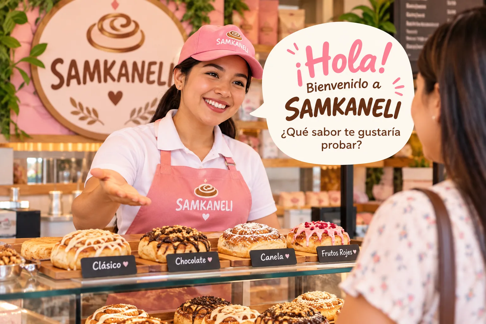

Misión
Endulzar a nuestros clientes con rollos de canela artesanales, combinando la canela con los sabores únicos de las frutas de nuestra selva y brindando una atención amable y cercana.
Inicio › La marca › Identidad corporativa
Base estratégica
Misión, visión y valores explicados con ejemplos de comportamiento. Los ejemplos de aplicación son propuestas, no prácticas ya comprobadas.

Endulzar a nuestros clientes con rollos de canela artesanales, combinando la canela con los sabores únicos de las frutas de nuestra selva y brindando una atención amable y cercana.
Para el año 2030, ser una marca reconocida a nivel regional por sus rollos artesanales, sus sabores de la Selva Central y la calidad de sus productos.
Proyección, no logro actual.
Texto completo en Empresa.
Valores
Elige un valor para ver qué significa, cómo se demuestra y qué esperamos que sienta el cliente.
Cuidar la presentación y la consistencia de cada producto.
Revisar que los rollos tengan buena apariencia y el mismo cuidado en cada pedido.
Ejemplo propuestoQue el cliente perciba dedicación y confianza.
Cumplir lo que se promete y decir con claridad lo que se puede ofrecer.
Comunicar bien las condiciones del pedido y cumplir los compromisos asumidos.
Ejemplo propuestoQue el cliente perciba seriedad.
Tratar a cada persona con paciencia, escucha y cordialidad.
Atender sin apuro, escuchar la consulta y responder con calidez.
Ejemplo propuestoQue las personas se sientan bien recibidas.
Mantener el cuidado del producto y del servicio de principio a fin.
Cuidar el pedido desde que se consulta hasta que se entrega.
Ejemplo propuestoQue se proyecte constancia.
Explorar combinaciones de sabores y nuevas formas de presentar la marca.
Probar sabores inspirados en frutas de la región y piezas gráficas nuevas.
Ejemplo propuestoQue la marca se perciba original.
Reconocer la riqueza de las frutas y sabores de la región.
Usar la fruta regional como protagonista y contar su origen con respeto.
Ejemplo propuestoQue se entienda el vínculo con la región sin explicaciones largas.
La ficha lista cinco valores (calidad, responsabilidad, respeto, compromiso, innovación) y, en otra parte, otros cinco (calidad, amabilidad, responsabilidad, creatividad y valoración de los sabores de la Selva Central). Aquí se agruparon en seis, conservando su significado.
Rollos de canela artesanales con sabores de la Selva Central, servidos con amabilidad.
El diferenciador es combinar un producto conocido con frutas de la región, y acompañarlo de una atención cercana y una identidad visual fácil de reconocer.

En la práctica
Según la ficha, la empresa se proyecta como confiable y responsable, y cuida la presentación e higiene de los productos y el cumplimiento de los pedidos.
Definido en la fichaLa ficha menciona un compromiso formal con la agricultura local y sostenible. Falta documentar qué prácticas concretas lo respaldan.
Por documentarActitud respetuosa, amable y responsable; cuidado en la presentación de los productos y un ambiente acogedor y de confianza.
Definido en la fichaCordial, rápida y personalizada, con lenguaje cercano. Se informa sobre los sabores para que cada cliente tenga una experiencia agradable.
Definido en la fichaCódigo de ética
Propuesta La ficha menciona un código de ética pero no lo detalla; esta es una propuesta para completarlo.